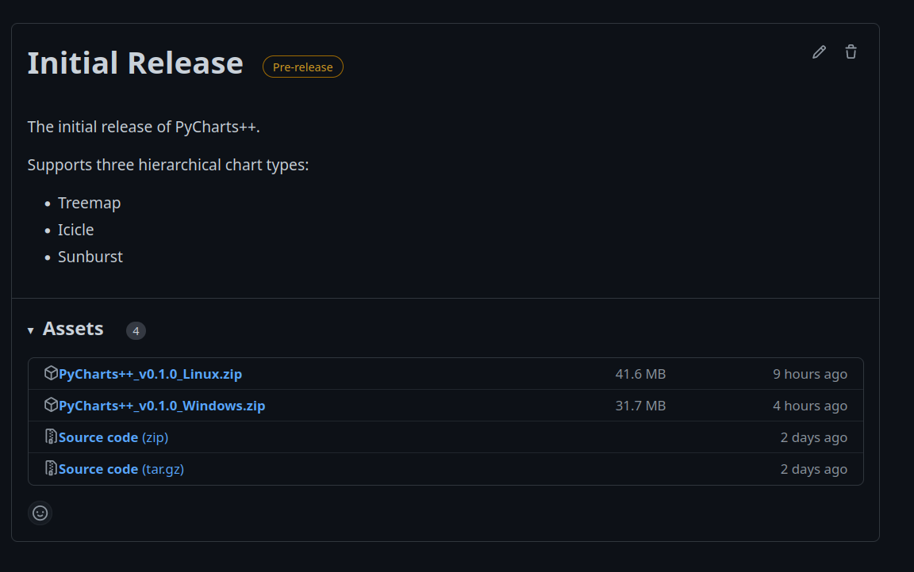
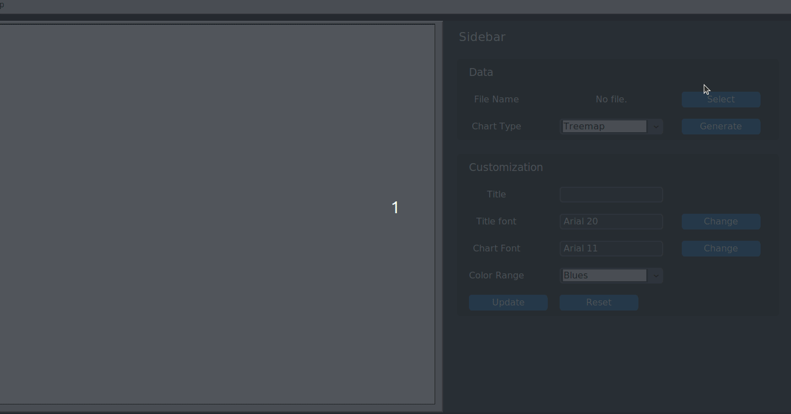
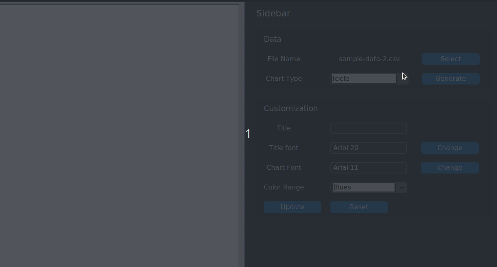
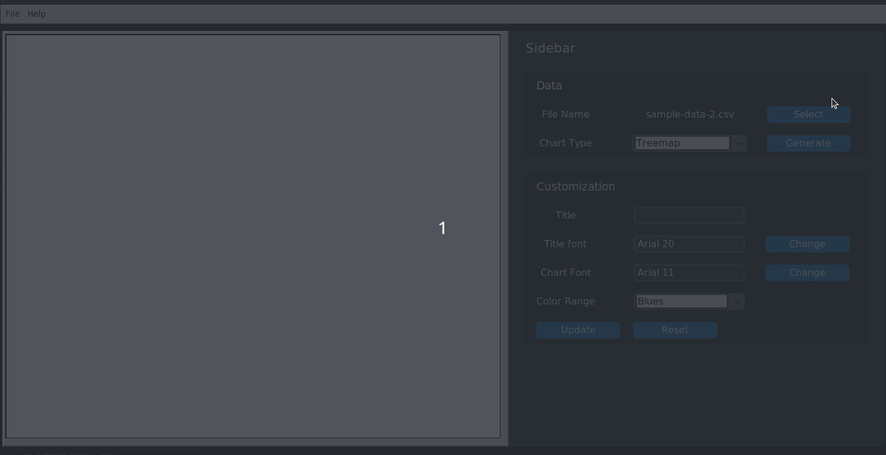
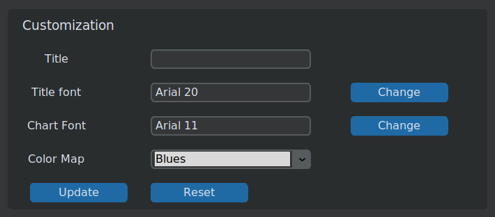
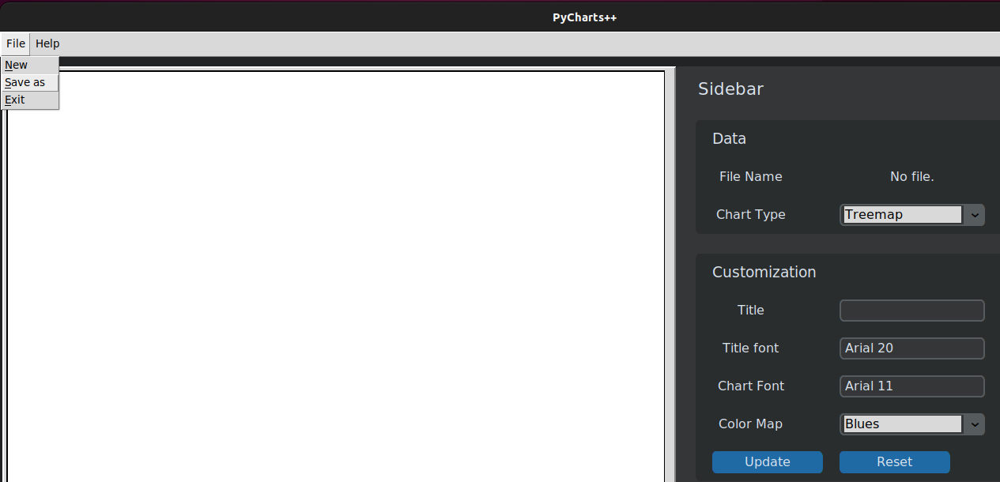

User Guide
Installation
The executable software can be downloaded from the releases page of our Github page. Make sure to download the correct zip file according to your operating system.
Extract the downloaded zip file. Then run the executable file named "app" inside the app folder.

Usage
Basic Usage
To generate a chart using PyCharts++, you need to provide a CSV data file in a pre-defined format to the program. See the Data File Preparation section for more information.
You can select the data file by clicking on the Select button in the Data section of the Sidebar.

Select the Chart Type from the dropdown menu.

Click Generate button to generate the chart.

Data File Preparation
The input data file to PyCharts++ should be a Comma Separated Values (CSV) file.
The format of the file is as follows:
- There must be two columns named name, and value.
- Each entry in the file is a node in the hierarchy/tree.
- The name column of an entry is given such that it represents all the nodes up to that node from the root. The node names are separated by periods.
- Example: root.node1.node2.node3
- The value column can be empty, an integer, or a float for a given entry. (Non-leaf nodes of the tree have empty values.)
- Whenever you use a node name inside the name of another node, that ancestor node must be defined before the new node.
- Example: If you are entering root.node1.node2 as an entry, there must be a previous entry as root.node1.
- The name of each node must be unique. (Please note the term node.)
- It means that if there is an entry as "root.apple.orange.banana", there cannot be an entry as "root.apple.banana".
A sample input data file is shown below.
name,value
Countries,
Countries.Asia,
Countries.Asia.Sri Lanka,
Countries.Asia.Sri Lanka.Negombo,100
Countries.Asia.Sri Lanka.Colombo,280
Countries.Asia.India,
Countries.Asia.India.Mumbai,200
Countries.Asia.India.Chennai,380
Countries.Europe,
Countries.Europe.Germany,
Countries.Europe.Germany.Frankfurt,128
Countries.Europe.Italy,
Countries.Europe.Italy.Venice,110
Countries.Europe.Italy.Rome,82
Customize Charts
PyCharts++ offers few options to customize the charts generated.
- Title
- You can enter a title for the generated chart.
- Title font
- You can set the title's font family and font size.
- Chart font
- You can change the font family and the font size of the text inside the chart.
- Color Map
- You can select a color map for the colors of the chart.
After setting the attributes, you need to click Update to update the chart.

Export Charts
You can export the generated charts into Portable Network Graphic (PNG) format.
To export, click File from the Menu, then click Save as. A dialog will appear to select the location to save the output.
